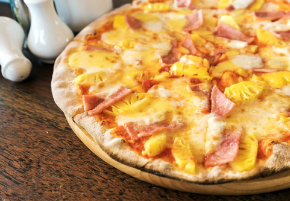

Hawaiian! Our signature dish for you.
By the mid 60s, Satellite Restaurant (now under different ownership) had been serving pizza for a few years, although Panopoulos, now 82, says the dish was still a novelty for Canadians, who at the time topped their pies conservatively.
“People only put on mushroom, bacon and pepperoni, that’s all,” says Panopoulos. “I had pineapple in the restaurant and I put some on, and I shared with some customers and they liked it. And we started serving it that way. For a long time, we were the only ones serving it.” As we know it today, Hawaiian pizza is a classic American-style cheese pizza topped with ham and pineapple. Variations may include bacon in place of or in addition to the ham, but Panopoulos says that his major contribution was simply adding the pineapple.
“You could have only pineapple, you could have bacon and pineapple, you could have mushrooms and pineapple, anything. Just like today, you could have a choice,” he says.
Panopoulos enjoyed a certain amount of media attention over the last few years, but the pizza claim overshadows what may actually be Panopoulos’ most enduring legacy: a passion for introducing diverse flavours to Canadian diners.
In the early 60s, says Panopoulos, pizza was considered ethnic food, an Italian-American curiosity that adventurous Canadians would try when they crossed the border. Back then, Panopoulos would drive to Detroit for a taste of the cheese-topped pie.“ Then we bought a little oven and learned how to make pizza,” he says.
Panopoulos didn’t stop with pizza. Over the years, the Satellite Restaurant introduced a variety of novel flavours to Chatham residents, like Chinese food prepared by a Chinese cook, and dishes from Panopoulos’ native Greece.
“Today you can go to a Chinese place and have a chicken salad, Thai place they give you something else. But in those days there was no way you could mix flavours,” says Panopoulos. “When you told someone to try pineapple on their pizza they looked at you like, ‘Are you crazy?’
Say what you will about Hawaiian pizza, a polarizing dish that seems to attract as many fans as detractors. But it’s this spirit, exemplified by Sam Panopoulos and other culinary innovators, that has expanded Canadian cuisine beyond maple syrup and bacon, to represent the cultural diversity that makes this country — and its cuisine — great.